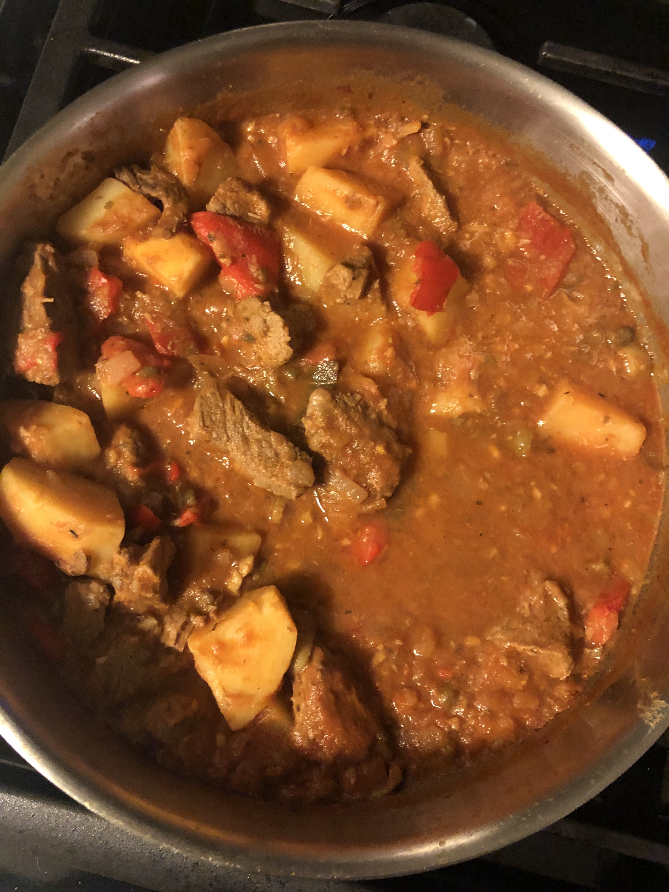

Cuban Beef Stew

Description
The traditional dish uses a good amount of olive oil and meat with a lot of marbling. This version is lower in fat, but is true to the spirit of the recipe. Although it does take a fair amount of time, it is not difficult to make.
Ingredients
- 2 tablespoons olive oil
- 1 onion, chopped
- 4 cloves garlic, minced
- 1 red bell pepper, chopped
- 1 1/2 pounds sirloin tips, cubed
- 2 bay leaves
- 1/2 teaspoon ground cumin
- 1 teaspoon dried oregano
- 1/2 cup dry sherry
- 1 (8 ounce) can tomato sauce
- 2 tablespoons red wine vinegar
- 1/4 cup pimento-stuffed green olives
- 1/4 cup raisins
- 2 tablespoons capers
- 4 potatoes, peeled and quartered
- salt and pepper to taste
Steps
- In a larger saute pan, heat oil over medium heat. Cook onion and garlic in oil, stirring frequently, until transparent. Stir in cubed meat, and cook until browned. Stir in red bell pepper, bay leaf, cumin, and oregano;cook for 2 to 3 minutes.
- Stir in sherry, tomato sauce, vinegar, olives, raisins, and capers. Pour in enough water to just cover meat. Bring to boil, reduce heat to low, and cover. Simmer until fork tender, about 1 1/2 hours. Add more water if stew becomes too thick.
- Stir potatoes into the stew. Season with salt and pepper to taste. Cook, covered, until potatoes are almost tender. Uncover, and cook until done.